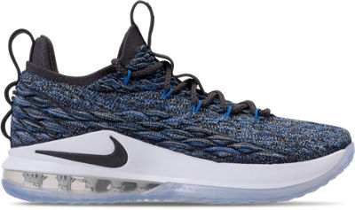

The Competitive Nature of the Basketball Shoe Market
3 Kinds of Basketball Shoes: Lebron's, KD's, and Jordan's
Lebron's:

Why you should choose Lebron's
Lebron’s shoe features a combination of a stylish and comfortable feel, and allow for great success on and outside of the basketball court.
On the basketball court, the Lebron 16 (his newest shoe) introduces a new form of technology that allows for a balance of comfort and traction.
Generally, traction is needed in order for the player to run on the court without
falling.
The combination of the surrounding battle-knit material and the Nike Air Max Sole is guaranteed to suffice your needs.
The battle-knit material is strong and durable, allowing for the shoe to last a lifetime.
KD's:
Why you should choose KD's
Kevin Durant's signature shoe, known as the KD, is a light and thin basketball shoe that allows for style and breathing room while running.
The KD shoe is also narrow, so a basketball player with wide feet may be uncomfortable while wearing these shoes.
While the KD may not be the most comfortable basketball shoe on the market, it is stylish and lightweight.
Jordan's:
Why you should choose Jordan's
Michael Jordan’s signature shoe, often referred to as Jordan’s or J’s, is a drastically different in comparison to KD’s or Lebrons.
J’s are widely known for their fashionable appearance. Many players do not wear Jordan’s anymore to play basketball because they are not particularly comfortable to run in,
they have a weak amount traction,
and they get scuffed extremely easily. Jordan’s, however, are the most stylish shoe on the market.
They can be worn with almost any outfit (without looking foolish), which is not necessarily the case with KD’s or Lebron’s.